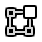

物体模式¶
模式选择菜单。¶
模式 是一个Blender面向物体级别的功能，这意味着整个Blender应用程序总是处于在单一模式，而且模式根据所选激活物体的类型不同而有所不同 - 其中大多数只能启用默认的 物体模式 （如相机，灯光等）。每种模式都是用来编辑所选物体的某个方面的。详情请参阅 Blender的模式。
你可以在 3D视图 的标题栏的 Mode 下拉列表设置当前的选择模式 (见图 模式选择菜单。)。
Note
用户仅可以在 物体模式 选择物体，在其它的模式下，当前物体的选择状态是被 "锁定的" (某种程度上说，骨架的 姿态模式 例外)。
在Blender中，模式可以影响许多事情:
它们会修改面板和/或某些属性编辑器选项卡中可用的控件。
它们会修改整个编辑器的行为, 比如 UV/图像编辑器 和 3D 视图。
它们会修改可用的标题栏工具 (菜单和/或菜单选项,以及其它的控件…)。例如,在 3D 视图 编辑器窗口, 在 物体模式 下的 物体 菜单， 在 编辑模式 下变成 网格 菜单 (用于编辑当前的活动网格物体)，在 顶点绘制模式 模式则是 绘制 菜单…
图标 |
名称 |
快捷键 |
技术细节 |
|---|---|---|---|
None 1 |
默认模式,，适用于所有的物体类型，专用于编辑 物体 数据块(比如位置/旋转/大小)。 |
||

|
Tab 1 |
该模式适用于所有的可渲染的物体类型, 它用于编辑物体的“形状” 物体数据 数据块(比如网格的顶点/边/面, 曲线控制点/曲面等等)。 |
|
None 1 |
仅适用于网格，用于启用Blender的3D网格雕刻工具。 |
||
None 1 |
仅适用于网格，用于网格顶点着色 (即“绘制”它们)。 |
||
Ctrl-Tab 2 |
仅适用于网格，专用于编辑顶点组权重。 |
||
None 1 |
仅适用于网格，用于直接在3D视图中模型上绘制纹理。 |
||
None 1 |
仅适用于网格，用于粒子系统, 与可编辑系统(毛发系统)。 |
||
Ctrl-Tab 2 |
仅适用于骨架，用于编辑骨架姿势。 |
||
D-Tab |
仅适用于蜡笔，用于编辑蜡笔笔画。 |
- 1(1,2,3,4,5,6)
Tab 切换 编辑模式。
- 2(1,2)
Ctrl-Tab 用于在 权重绘制模式 (网格)/姿势模式 (骨架) ，和其他当前模式(默认是 物体模式)之间切换。 然而，在某些模式下，该快捷键还有其他的内部用法 (比如在 雕刻模式， 它用于选择当前的笔刷)…
正如你所看到的，使用快捷键在两个模式之间切换是非常棘手的。尤其对于网格来说。
Note
游标在 绘制与雕刻模式 会变成一个笔刷。
在这里我们不再详细介绍模式的用法，因为大多数模式在对应章节都有介绍。
Hint
如果在读这本手册时，提到的一些按钮和菜单选项没有出现在屏幕上, 可能是因为不在合适的模式下，该选项无效。